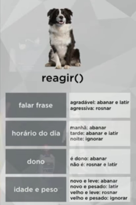

Aprenda POO PHP
Tudo sobre POO PHP Parte 6
Polimorfismo Sobrecarga - Parte 2
Sabemos que o polimorfismo de sobreposição, que podemos substituir um método que vem da classe mãe na classe filha. Nesse caso temos a mesma assinatura em classes diferentes. Já no polimorfismo de sobrecarga é o contrário, são assinaturas diferentes dentro da mesma classe, todos os métodos tem o mesmo nome, dentro da mesma classe, mas com assinaturas diferentes (passagens de parâmtros).
Vamos supor que um cachorro tenha o método reagir (e as reações podem ser várias, no caso, quatro), como no exemplo abaixo:
Mas tem um porém, o PHP não suporta polimorfismo de sobrecarga por não ser totalmente Orientada a Objetos, mas podemos "burlar" isso em PHP.
Vamos supor que tenhamos a classe Cachorro, que herda características de Lobo, e esta herda de Mamifero, que por último herda de Animal.
Crie a classe Lobo.php:
require_once "Mamifero.php";
class Lobo extends Mamifero {
public function emitirSom() {
echo "<p>Auuuuuuuuuuu...</p>";
}
}
Altere a classe Cachorro, de forma que o extends venha de Lobo:
require_once "Lobo.php";
class Cachorro extends Lobo {
public function emitirSom() {
echo "<p>Au! Au! Au!</p>";
}
}
E no Index:
require_once "Cachorro.php";
$m = new Mamifero();
$m->emitirSom();
$l = new Lobo();
$l->emitirSom();
$c = new Cachorro();
$c->emitirSom();
Como já vimos, no PHP não existe uma palavra pra sobrepor (override), é só colocar a mesma assinatura que ele vai funcionar.
O PHP tem um pequeno problema, ele não tem tipos primitivos explícitos, o que dificulta a implementação de sobrecarga. Veja um exemplo que dará erro por não suportar mais de um método com mesmo nome (colocaríamos em Cachorro.php):
public function reagir($frase) {
}
public function reagir($hora, $min) {
}
public function reagir($dono) {
}
public function reagir($idade, $peso) {
}
Para "burlar" isso em PHP, mudamos de nome, mas isso NÃO é sobrecarga:
public function reagirFrase($frase) {
}
public function reagirHora($hora, $min) {
}
public function reagirDono($dono) {
}
public function reagirIdade($idade, $peso) {
}
O código completo de Cachorro é esse:
require_once "Lobo.php";
class Cachorro extends Lobo {
public function emitirSom() {
echo "<p>Au! Au! Au!</p>";
}
public function reagirFrase($frase) {
if($frase == "Toma Comida" || $frase == "Olá") {
echo "<p>Abanar e Latir</p>";
}
else {
echo "<p>Rosnar</p>";
}
}
public function reagirHora($hora, $min) {
if($hora < 12) {
echo "<p>Abanar</p>";
}
else if($hora >= 18) {
echo "<p>Ignorar</p>";
}
else {
echo "<p>Abanar e Latir</p>";
}
}
public function reagirDono($dono) {
if($dono == true) {
echo "<p>Abanar</p>";
}
else {
echo "<p>Rosnar e Latir</p>";
}
}
public function reagirIdadePeso($idade, $peso) {
if($idade < 5) {
if($peso < 10) {
echo "<p>Abanar</p>";
}
else {
echo "<p>Latir</p>";
}
}
else {
if($peso < 10) {
echo "<p>Rosnar</p>";
}
else {
echo "<p>Ignorar</p>";
}
}
}
}
E no index, coloque normalmente os objetos:
require_once "Cachorro.php";
$c = new Cachorro();
$c->reagirFrase("Olá");
$c->reagirFrase("Vai Apanhar");
$c->reagirHora(11, 45);
$c->reagirHora(20, 00);
$c->reagirDono(true);
$c->reagirDono(false);
$c->reagirIdadePeso(2, 12.5);
$c->reagirIdadePeso(17, 4.5);
Essa é a gambiarra que usamos em PHP, já que a sobrecarga não é suportada nele, esta é melhor entendida em linguagens como Java.
Projeto Final em PHP - Parte 1
Agora vamos fazer um exercício no qual colocaremos os conhecimentos em POO aqui. Veja o diagrama que usaremos:

A classe Video tem uma interface chamada AcoesVideo, e a classe Gafanhoto herda de outra classe, a Pessoa (abstrata). Elas terão uma ligação que faremos posteriormente.
No exercício, terá os três pilares, Encapsulamento (Video e AcoesVideo), Herança (Gafanhoto e Pessoa), e veremos também Polimorfismo.
Sugestão, crie um novo projeto só pra isso, com um nome como ProjetoYoutube.
Esse é o código da interface AcoesVideo:
interface AcoesVideo {
public function play();
public function pause();
public function like();
}
A característica de um método abstrato é que ele é declarado, mas não implementado. Ele só será implementado quando implementarmos a interface. Isso faremos na classe Video.
Esse é o código da classe Video:
require_once "AcoesVideo.php";
class Video implements AcoesVideo {
private $titulo;
private $avaliacao;
private $views;
private $curtidas;
private $reproduzindo;
public function __construct($titulo) {
$this->titulo = $titulo;
$this->avaliacao = 1;
$this->views = 0;
$this->curtidas = 0;
$this->reproduzindo = false;
}
public function __destruct() {
echo "Objeto Video Destruído!<br/>";
}
public function like() {
$this->curtidas++;
}
public function pause() {
$this->reproduzindo = false;
}
public function play() {
$this->reproduzindo = true;
}
public function getTitulo() {
return $this->titulo;
}
public function getAvaliacao() {
return $this->avaliacao;
}
public function getViews() {
return $this->views;
}
public function getCurtidas() {
return $this->curtidas;
}
public function getReproduzindo() {
return $this->reproduzindo;
}
public function setTitulo($titulo) {
$this->titulo = $titulo;
}
public function setAvaliacao($avaliacao) {
$this->avaliacao = $avaliacao;
}
public function setViews($views) {
$this->views = $views;
}
public function setCurtidas($curtidas) {
$this->curtidas = $curtidas;
}
public function setReproduzindo($reproduzindo) {
$this->reproduzindo = $reproduzindo;
}
}
E no index, isso pra mostrar os resultados:
require_once "Video.php";
$v[0] = new Video("Aula 1 de POO");
$v[1] = new Video("Aula 12 de PHP");
$v[2] = new Video("Aula 15 de HTML5");
print_r($v);
unset($v);
Até o momento, já criamos objetos usando Encapsulamento.
Vamos criar a Classe Pessoa da segunda parte, esse é o código:
abstract class Pessoa {
protected $nome;
protected $idade;
protected $sexo;
protected $experiencia;
public function __construct($nome, $idade, $sexo) {
$this->nome = $nome;
$this->idade = $idade;
$this->sexo = $sexo;
$this->experiencia = 0;
}
public function __destruct() {
echo "Objeto Pessoa Destruído!<br/>";
}
protected function ganharExp($n){
$this->experiencia += $n;
}
public function getNome() {
return $this->nome;
}
public function getIdade() {
return $this->idade;
}
public function getSexo() {
return $this->sexo;
}
public function getExperiencia() {
return $this->experiencia;
}
public function setNome($nome) {
$this->nome = $nome;
}
public function setIdade($idade) {
$this->idade = $idade;
}
public function setSexo($sexo) {
$this->sexo = $sexo;
}
public function setExperiencia($experiencia) {
$this->experiencia = $experiencia;
}
}
Por essa classe acima ser abstrata, não podemos criar um objeto Pessoa no index.
E agora, criaremos a classe Gafanhoto, que chamará a classe Pessoa:
require_once "Pessoa.php";
class Gafanhoto extends Pessoa {
private $login;
private $totAssistido;
public function __construct($nome, $idade, $sexo, $login) {
parent::__construct($nome, $idade, $sexo); // Isso chama o construtor da classe Pessoa e permite adicionar seus dados ao Gafanhoto
$this->login = $login;
$this->totAssistido = 0;
}
public function __destruct() {
echo "Objeto Gafanhoto Destruído!<br/>";
}
public function assistirMaisUm() {
$this->totAssistido++;
}
public function getLogin() {
return $this->login;
}
public function getTotAssistido() {
return $this->totAssistido;
}
public function setLogin($login) {
$this->login = $login;
}
public function setTotAssistido($totAssistido) {
$this->totAssistido = $totAssistido;
}
}
PS: O método parent::__construct() dentro do construtor é o que permite que ocorra a sobreposição de construtores. Usando ele, podemos usar os parâmetros do construtor da classe pai e também adicionar outros no construtor da classe filha. É possível chamar qualquer método de classes pais usando o parent::, caso sejam necessário serem chamados em outros métodos em classes filhas.
E no index, podemos fazer assim:
require_once "Video.php";
require_once "Gafanhoto.php";
$v[0] = new Video("Aula 1 de POO");
$v[1] = new Video("Aula 12 de PHP");
$v[2] = new Video("Aula 15 de HTML5");
print_r($v);
$g[0] = new Gafanhoto("Jubileu", 22, "M", "CorvoJubileu");
$g[1] = new Gafanhoto("Creuza", 35, "F", "Creuza35");
print_r($g);
unset($v);
unset($g);
Nesse exemplo acima, nós mostramos o conceito de Herança.